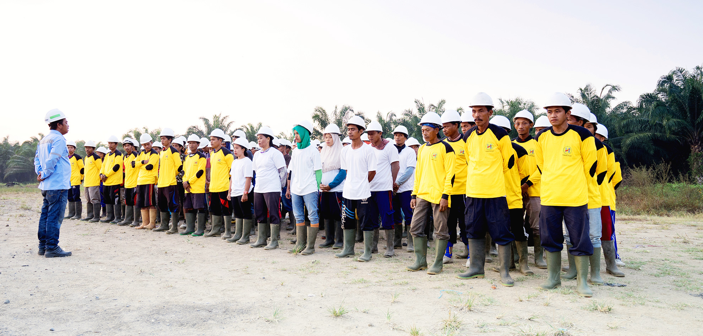
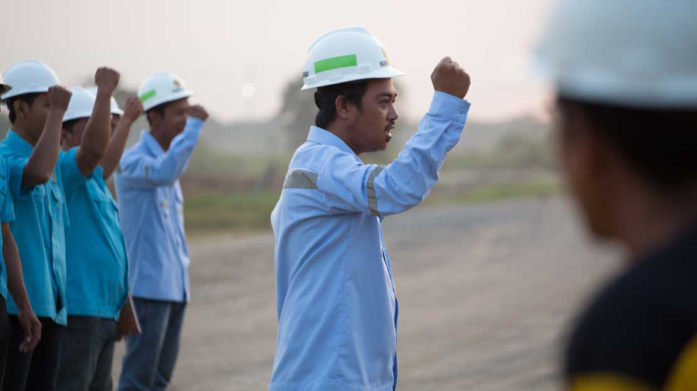
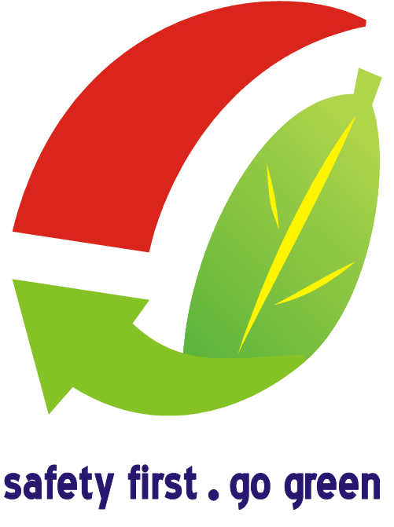

Ikhtisar
Direktorat SHE bertujuan meminimalkan kecelakaan kerja serta menjaga keselamatan, kesehatan, dan lingkungan di seluruh unit usaha.

DIREKTORAT SAFETY, HEALTH & ENVIRONMENT (SHE)
Direktorat SHE Hasnur Group bertujuan untuk membantu meminimalkan terjadinya kecelakaan kerja, terjadinya kerugian atau kerusakan peralatan serta kerusakan lingkungan. Direktorat SHE memberikan dukungan kepada entitas/perusahaan dalam menegakkan Visi dan Misi menuju perusahaan yang peduli terhadap lingkungan dan masyarakat, dalam upaya pengelolaan sumber daya alam secara berkesinambungan.
Kepedulian perusahaan terhadap aspek Keselamatan, Kesehatan Kerja dan Lingkungan dituangkan dengan jelas di dalam Kebijakan Keselamatan dan Kesehatan Kerja serta Pelestarian Lingkungan (K3L) yang ditandatangi oleh Presiden Direktur Hasnur Group, untuk menjadi salah satu acuan yang wajib dijalankan oleh seluruh Manajemen dan Karyawan sebagai pencapaian kinerja perusahaan.
Dalam menjalankan usaha dan operasional usaha di Strategic Business Unit (SBU) dan unit usaha (Entitas), Hasnur Group tetap berkomitmen mengikuti peraturan perundang-undangan yang berlaku dan selalu berupaya untuk mencapai target lebih baik terhadap aspek Keselamatan, Kesehatan Kerja dan Lingkungan.
AMDAL (Analisis Mengenai Dampak Lingkungan) dan UKL-UPL (Upaya Pengelolaan Lingkungan dan Upaya Pemantauan Lingkungan) merupakan instrumen pengelolaan lingkungan setiap usaha perusahaan dan syarat untuk mendapatkan Izin Lingkungan dari Pemerintah. Setiap usaha dan/atau kegiatan Perusahaan pun harus melalui kajian aspek K3 dan dampaknya terhadap lingkungan hidup.
Dalam pelaksanaan pertambangan perusahaan menerapkan konsep Good Mining Practice (teknik pertambangan yang baik), menerapkan prinsip-prinsip kelestarian dalam pengelolaan hutan, menerapkan aspek keberlanjutan ( sustainability) pada pengelolaan agribisnis dan juga pada usaha-usaha lain yang dimiliki.
Dengan upaya, kinerja yang baik dan berkelanjutan telah memberikan pencapaian bagi kinerja perusahaan diantaranya PROPER BIRU, Sertifikat International Organization for Standardization (ISO) 9001, Sertifikat ISO 14001, Sertifikat ISO 45001, Sertifikat Sistem Manajemen Keselamatan Pertambangan (SMKP), Sertifikat Indonesian Sustainable Palm Oil (ISPO), Sertifikat International Code for The Security of Ships and Port Facilities (ISPS CODE), dan Penghargaan Nihil Kecelakaan ( Zero Accident Award ) dari pemerintah.

Logo SHE Hasnur Group

Arti logo :
- Dua buah lambang gambar dengan siklus menyambung membentuk ilustrasi setetes air , melambangkan dinamika perusahaan dan peningkatan kualitas kegiatan operasional dan aspek K3L (Keselamatan, Kesehatan Kerja dan Lingkungan) secara berkelanjutan untuk kesejahteraan bersama.
- Bidang lengkung berwarna merah , melambangkan seluruh kegiatan bisnis perusahaan yang senantiasa maju dan berkembang
- Helai daun dengan tulang daun berwarna kuning dan ujung panah berwarna hijau , melambangkan budaya K3L dan kesejahteraan yang berkesinambungan seiring dengan beroperasinya perusahaan.
- Semboyan berwarna biru , melambangkan kebulatan tekad dan komitmen perusahaan Hasnur Group terhadap K3L
- Tulisan ‘safety first’ atau ‘aman’ , melambangkan selalu mengutamakan tindakan dan kondisi yang aman dan sehat dalam menjalankan usaha
Tulisan ‘go green’ atau ‘ramah lingkungan’ , melambangkan mewujudkan kelestarian lingkungan melalui produksi bersih dan meminimalkan dampak negatif yang ditimbulkan.